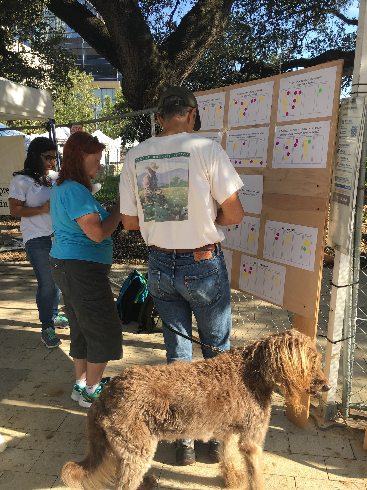
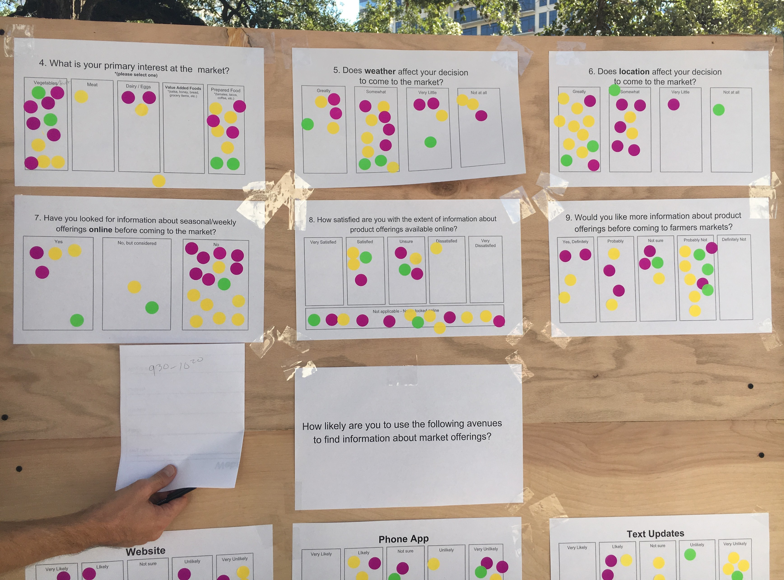
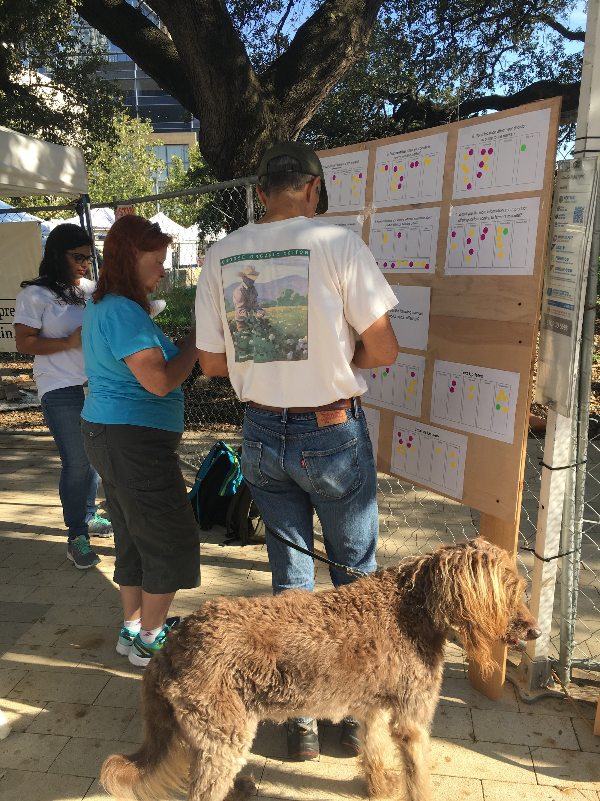
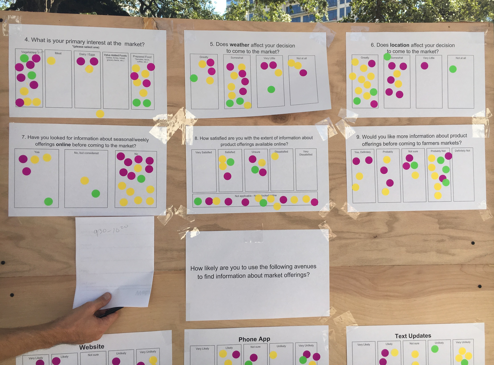
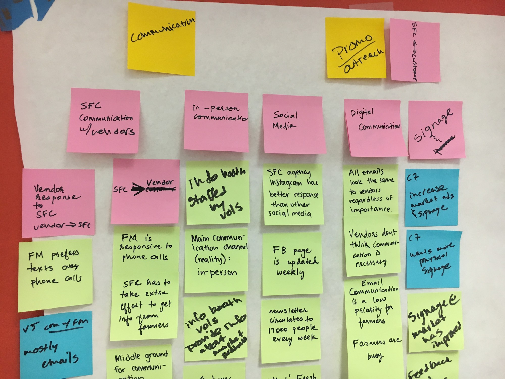
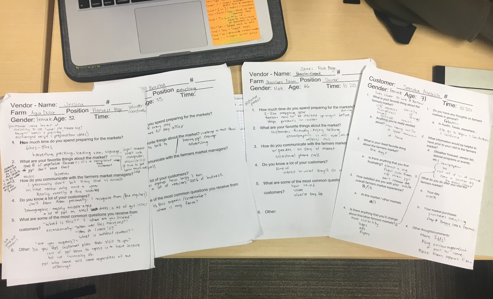
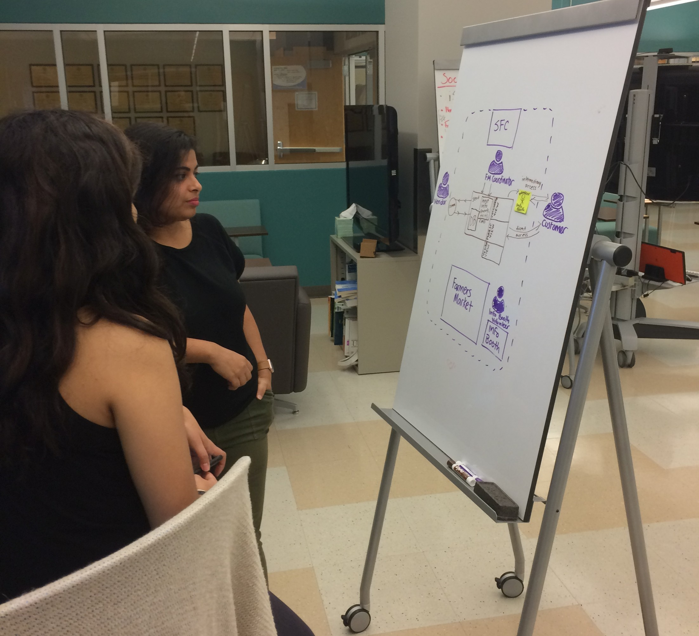
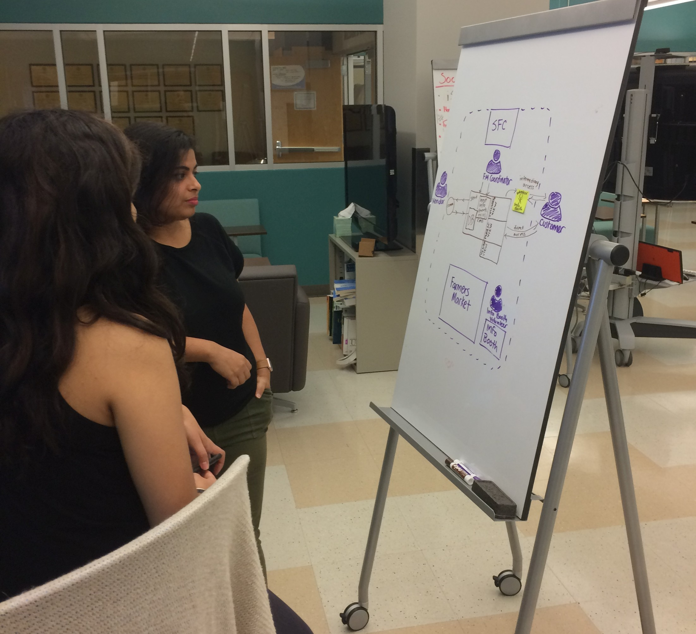

Contexual Inquiry and Analysis

 



Contexual Inquiry at SFC Farmers Market at Downtown
 
Contexual Analysis with the help of raw notes and affinity diagram
Contexual Inquiry at SFC Farmers Market at Downtown
As we wanted to interview and observe vendors and customers in the work environment, we chose to meet the SFC farmers market coordinators on a Friday to observe them on their main preparation day for the week and to gain approval to meet with vendors and customers the following day, the weekly market day.
We wanted to understand the frustrations with the current process of communication between vendors, customers and farmers market coordinators as well as collect information on their workflow.
The most challenging part of this phase was creating a method to contact customers at the market to gain their perspectives without being unobtrusive. Therefore, we came up with the solution of a dot survey, where the reward of placing stickers on a board attracted customers to answer over ten questions and made it easier for us to encourage some responders to answer additional open-ended questions.
Contexual Analysis with the help of raw notes and affinity diagram
Key Takeaways
Customers prefer asking for information in the market rather than on the website or through any other media.
For most vendors, face to face communication is their prefered mode of communication
SFC’s Farmers Market Coordinators spend most of their time communicating general information and issues to vendors in-person. They also have to constantly train information booth volunteers to relay accurate information to customers.
7
Customers
8
Vendors
2
Coordinators

Dot survey response to understand customer’s preferred avenue to recieve information on product offerings
 
